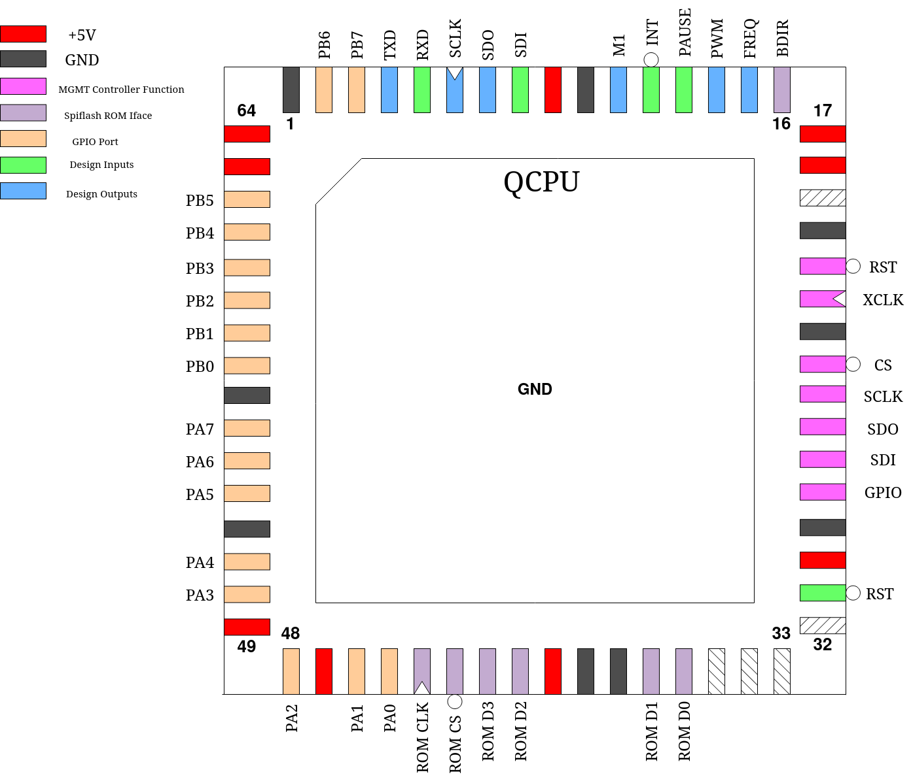

QCPU MCU
This design is a general-purpose 8-bit microcontroller. On top of a RISC CPU core, it also contains the following I/O peripherals:
2 8-bit GPIO ports, each line individually programmable
1 External interrupt source
1 interrupt-capable 16-bit timer
1 PWM generator
1 programmable frequency generator
The internal 64 bytes of RAM in the multiplexer are used as data memory, and an external QSPI flash is used as program memory.
Pinout
Pin # |
Name |
Type |
Summary |
|---|---|---|---|
|
RSTD |
I |
Active low design reset |
|
ROM D[3:0] |
IO |
Bi-directional QSPI data lines to spiflash |
|
ROM CS |
O |
Chip Select line to spiflash |
|
ROM CLK |
O |
Serial Clock line to spiflash |
|
PA[7:0] |
IO |
GPIO PORTA |
|
PB[7:0] |
IO |
GPIO PORTB |
|
TXD |
O |
UART Serial Data Out |
|
RXD |
I |
UART Serial Data In |
|
SCLK |
O |
SPI Master Port Serial Clock |
|
SDO |
O |
SPI Master Port Serial Data Out |
|
SDI |
I |
SPI Master Port Serial Data In |
|
M1 |
O |
Machine Cycle 1, pulses high at every instruction fetch |
|
INT |
I |
External interrupt request, negative edge triggered |
|
PAUSE |
I |
Pauses CPU instruction execution while high |
|
PWM |
O |
PWM signal output |
|
FREQ |
O |
Frequency generator signal output |
|
BDIR |
O |
Indicates direction of ROM D[3:0] lines, low = output, high = input |
Program ROM
The program ROM is connected externally and must be either a Winbond 25Q32 or similar IC that accepts the same command set. In particular, verify that this command sequence puts the chip into QSPI mode and starts a quad read:
0xFF (ignore if device does not have this command)
0xAB
0x06 0x01 0x02 0x02
0xEB [now in quad mode] 0x00 0x00 0x00 0x00 0x00 0x00 0xA5
Additionally, because these ROMs are all 3.3V devices, QCPU is a 5V device and the QSPI bus is bi-directional, a bi-directional level shifter needs to be used on the 4 QSPI data lines. The BDIR output can be used to set the direction on the level shifter.
Resistors (ideally 1000 ohm) must be placed on all data lines on both sides of the shifter as bus shorts will briefly be created while the flash is still in SPI mode. These will not damage either device provided these current-limiting resistors are in place. Additionally, a pull-up resistor to 3.3V needs to be placed on whichever pin of the flash acts as HOLD in SPI mode.
Scratch Registers
QCPU posesses a set of 16 8-bit general-purpose scratchpad registers, designated r0 - r15. r0, however, is the “zero register” and hard-wired to 0. It will always read 0 and writes to it will be discarded.
There are also several special-purpose registers (not including IO device registers, which are accessed in a special way and described later):
Mnemonic |
Name |
|---|---|
|
14-bit Program Counter |
|
8-bit IO Address |
|
Interface to the I/O devices |
|
CPU flags |
The CPU flags register contains the following information:
PC, IOADDR and FLAGS are all cleared to zero on reset.
Bit |
Function |
|---|---|
|
Carry-Flag |
|
Zero-Flag |
|
External Interrupt Enable |
|
Timer Interrupt Enable |
Instruction Formats
All instructions are a constant 16-bits wide, to allow for embedding of register addresses and immediate values. As a result, ROM memory is addressed as an array of 16-bit wide words by the PC. The traditional byte address of the beginning of an instruction is determined by multiplying the PC value by two.
For the instructions, the following formats exist:
Immediate
The immediate value is loaded into the specified register, unless that register is r0. The opcode for this is instead used for another instruction.
Reg/Reg
Specifies one of 15 operations to be performed between both registers. R1 and R2 are the source operands, and R1 is the destination operand. An opcode of all ones is reserved, that code is used for the EXT instruction type. For some opcodes, the R2 slot is used not as a register index, but a small immediate value ranged 0 - 15.
The following valid opcodes are available:
Opcode |
Operation |
|---|---|
0 |
R1 + R2 |
1 |
R1 + R2 + C |
2 |
R1 - R2 |
3 |
R1 - R2 - ~C |
4 |
R1 & R2 |
5 |
R1 | R2 |
6 |
R1 ^ R2 |
7 |
~R2 |
8 |
R1 + Imm |
9 |
R1 + Imm + C |
10 |
R1 - Imm |
11 |
R1 - Imm - ~C |
12 |
{R2, R1} = PC + 2 |
13 |
PC = {R2, R1} |
14 |
Compare R1, R2 |
Of note are the special operations 12 and 13, which can store and load the program counter value, allowing for subroutine calls. There is also a compare operation, which sets the flags as if R1 - R2 was executed, but does not write the result back into R1. Neither register is modified.
Jump
Unconditional jump. The specified immediate address is loaded into PC.
Conditional Branch
The immediate value is sign-extended to 14 bits and added to the PC only if the specified condition is true.
The following conditions may be checked:
Code |
Condition |
|---|---|
0 |
C == 0 |
1 |
C == 1 |
2 |
Z == 0 |
3 |
Z == 1 |
Load
Loads one byte from data memory into a register by adding the value of an index register onto a base address to obtain the address to load from.
Store
Stores a register value into data memory using the same address calculation as the Load instruction.
EXT
Provides 16 additional operations to the CPU, operating directly on a register or using a small immediate value range 0 - 15.
The following operations are available:
Opcode |
Operation |
|---|---|
0 |
R1 = R1 >> 1, C = R1[0] |
1 |
R1 = R1 >> 1 | C << 7, C = R1[0] |
2 |
R1 = R1 << 1, C = R1[7] |
3 |
R1 = R1 << 1 | C, C = R1[7] |
4 |
R1 = R1 ROR 1 |
5 |
R1 = R1 ROL 1 |
6 |
IOADDR = R1 |
7 |
IO = R1 |
8 |
R1 = IO |
9 |
Compare r1, Imm |
10 |
WAIT |
11 |
Return from Interrupt |
12 |
r1, r2 = r1 * R1 |
13 |
R1 = Flags |
14 |
Flags = R1 |
15 |
{r2,r1} = ROM[{r3,r2}] |
Note that “R1” refers to the register index provided with the instruction code, while “r1” and “r2” refer to the literal register indexes 1 and 2.
Operation 10, WAIT, halts program execution until an interrupt occurs, at which point the interrupt is handled. When the interrupt returns, program execution resumes from the instruction following the WAIT. Note that if both IE and TIE are clear, this condition cannot occur and the CPU halts forever.
Operation 15 loads data from ROM into registers R1 and R2 from an addressed formed by R3 and R2. As the ROM is addressed as an array of 16-bit values, two registers are needed to contain the result.
Immediate Load IOADDR
There is one final instruction that results from forming the opcode of Immediate, but with a target register of r0. This opcode will instead load the immediate value into the IOADDR register.
IO Devices
Interfacing
IO devices are controlled via registers which are mapped into their own address space of 256 possible addresses via the IO and IOADDR registers. The IO address is set by writing IOADDR and the addressed register can be read or written via IO, which effectively becomes the addressed register.
GPIO Ports
PORTA and PORTB are each 8-bit-wide individually programmable GPIO ports, on pins PA[7:0] and PB[7:0] respectively. The direction and data on these ports can be read and written for every pin individually.
DDRA - Data Direction Register A
Address: 00h
This register allows individually changing each pin of PORTA between an input and output port. A logic one equals an output port while a logic zero equals an input port. This register resets to a value of 0.
DDRB - Data Direction Register B
Address: 02h
This register allows individually changing each pin of PORTB between an input and output port. A logic one equals an output port while a logic zero equals an input port. This register resets to a value of 0.
PORTA - Port Data Register A
Address: 01h
This register allows individually setting the state of every bit in PORTA configured as an output port. This register resets to a value of 0.
PORTB - Port Data Register B
Address: 03h
This register allows individually setting the state of every bit in PORTB configured as an output port. This register resets to a value of 0.
PINA - Port Input A
Address: 04h
This address returns the states of all bits in PORTA configured as inputs. It is read-only.
PINB - Port Input B
Address: 05h
This address returns the states of all bits in PORTB configured as inputs. It is read-only.
UART & SPI
QCPU contains two serial ports:
The UART, exposed through pins RXD and TXD, a full-duplex asynchronous serial port that can send and receive 8-N-1 data frames at a custom baudrate.
A SPI master port, exposed through pins SDI, SDO and SCLK also with a custom bitclock.
UDIV - UART Clock Divider
Address: 06h
Address: 07h
This register defines the amount by which the processor clock is divided to arrive at the UART bitclock. The UART bitclock will be equal to CPU clock / (UDIV + 1).
UDR - UART Data Register
Address: 08h
This register address is used to provide the UART data to transmit as well as read received data. When written to, the UART will immediatly activate, set its busy flag and begin serially transmitting the provided data byte. No further writes to this location should be made while the busy flag is set.
When read, the UDR will contain the latest data byte received by the UART. Accessing this location with a read will also clear the UHB flag.
SDIV - SPI Clock Divider
Address: 0Ah
This register defines the amount by which the processor clock is divided to arrive at the SPI serial clock. The SPI serial clock will be equal to CPU clock / (SDIV * 2 + 1).
SDR - SPI Data Register
Address: 0Bh
This register is used to transfer bytes in and out of the SPI port. Writing this register immediately begins a SPI full-duplex transfer. The SPI busy flag is set and the written data byte is serially transmitted at the same time as a data byte is received. No further writes to this location should be made while the busy flag is set.
Once the transfer is complete as indicated by the busy flag becoming clear, the received data byte can be obtained by reading from this location.
STAT - Serial Status Register
Address: 09h
This read-only register contains status information for both the UART and SPI master ports. Besides their respective busy flags, the STAT also contains UHB, a flag which indicates that the UART has received a data byte which has not yet been read out of the UDR.
Timer
QCPU contains a single 16-bit timer driven by the CPU clock and a customizable prescaler that is capable of generating an interrupt when expiring.
TDIV - Timer Clock Div (prescaler)
Address: 0Ch
This register defines the amount by which the processor clock is divided to arrive at the timer count rate. The rate will be equal to CPU clock / (TDIV + 1).
TCAPT - Timer Capture Value
Address: 0Eh
Address: 0Fh
This register is used to either hold a captured timer value or to buffer a value to be written into the timer.
Address 0Dh is a special location that, when written to, discards the written value and instead causes the current timer value to be “captured”, meaning copied into the TCAPT register pair.
Address 10h is a special location that, when written to, discards the written value and instead causes the timer to be loaded from the value stored in the TCAPT register pair.
TTOP - Timer Top
Address: 11h
Address: 12h
This register holds the maximum value the timer can take. The timer will count up at its specified rate until reaching this value, at which point it resets to 0 and optionally generates an interrupt if TIE in the CPU flags register is set. The timer also resets to 0 if it is larger than the value in TTOP, which may happen when TTOP is changed by the CPU.
PWM
QCPU contains a PWM generator with a fixed frequency of CPU clock / 256 and adjustable pulse width. This signal is always generated on the PWM pin.
PW - Pulse Width
Address: 13h
This register inversely adjusts the pulse width from 0 (longest) to 254 (shortest). Setting a value of 255 will cause the output to be always on. It resets to 80h.
Frequency Generator
QCPU contains a frequency generator which continuously generates a clock signal of a custom frequency on the FREQ pin by dividing the CPU clock by the value in FDIV.
FDIV - Frequency Divider
Address: 14h
Address: 15h
These registers are used to set the rate of the clock on the FREQ pin. It will be equal to CPU clock / (FDIV + 1).
Interrupts
QCPU has two sources for interrupts: the timer, as described above, and a negative edge on the INT pin can each trigger an interrupt, as long as the corresponding interrupt is enabled in the CPU flags register. Bit IE enables the external interrupt if set and bit TIE enables the timer interrupt if set.
When an interrupt is triggered and enabled, the CPU will finish processing the current instruction, then begin handling that interrupt. If both an external and timer interrupt occur at the same time, the timer interrupt will be handled first. The external interrupt will be handled upon conclusion of the timer interrupt handler.
Handling an interrupt first involves copying PC, IOADDR and FLAGS into hidden internal registers, backing up their states from before the interrupt. Then, the PC is loaded with either 0001h for a external interrupt and 0002h for a timer interrupt and both IE and TIE are cleared to prevent further interrupts. Interrupts may not stack and neither IE or TIE should be set again during an interrupt.
As QCPU clears the PC to 0000h during reset, the Idea is that the first three ROM locations are filled with Jump-Format instructions to lead to the reset and interrupt entry points.
To return from an interrupt, an EXT-Format instruction with the “Return from interrupt” opcode is used, which restores PC, IOADDR and FLAGS to their previous states by loading them from the hidden backup registers.